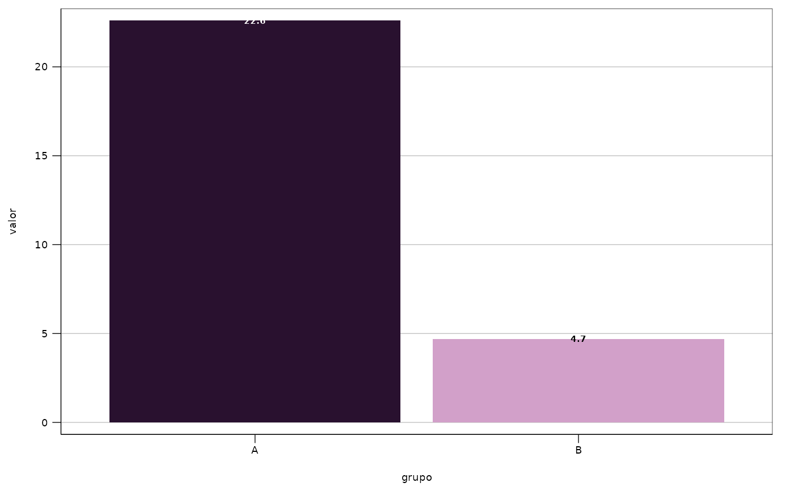

Contrasting text colour for labels drawn over a fill colour
Source:R/ipea_contrast_color.R
ipea_contrast_color.RdGiven one or more fill/background colours, returns "white"
or "black", whichever gives better contrast against that background.
Useful for value labels drawn inside bars or over points/lines, matching
the Ipea editorial guidelines for graphics, which alternate the colour of
data labels according to how dark the colour behind them is. See
https://www.ipea.gov.br/manualeditorial/padroes/padroes-grafico-visuais/ilustracoes-pi.html.
See also
Other ggplot2 theme functions:
ipea_label_size(),
scale_color_ipea(),
scale_fill_ipea(),
theme_ipea()
Examples
ipea_contrast_color(c("#29112F", "#D2A0C9"))
#> [1] "white" "black"
library(ggplot2)
df <- data.frame(grupo = c("A", "B"), valor = c(22.6, 4.7),
cor = c("#29112F", "#D2A0C9"))
ggplot(df, aes(grupo, valor, fill = cor, label = valor)) +
geom_col() +
geom_text(aes(color = ipea_contrast_color(cor)), size = ipea_label_size(),
fontface = "bold") +
scale_fill_identity() +
scale_color_identity() +
theme_ipea()
